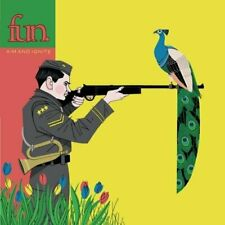

"Aim and Ignite" Aim and Ignite is the debut studio album by American indie pop band Fun. It was recorded at Appletree Studios.
On April 20, 2009, it was revealed that fans could download "At Least I'm Not as Sad (As I Used to Be)" for free upon signing up with the band's mailing list. In addition, it was mentioned that the band's debut album would be released in August. Between late April and early June, the band supported Manchester Orchestra on their headlining tour of the US. On May 19, Aim and Ignite was announced for release in August. In addition, the album's track listing was revealed. In August, the band went on a tour of the US with Hellogoodbye, Limbeck and My Favorite Highway. Aim and Ignite was released on August 25 through Nettwerk. Two of the bonus tracks are re-imagined versions of songs on the CD, and two are remixes. The title of the album comes from a line of the lyrics on the track "Light a Roman Candle with Me".